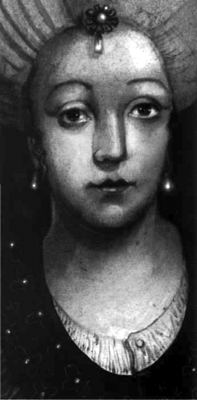

‘Tarihimizin en kurnaz,
en ihtişamlı ve en meşum kadını!’
Suzan Sözen (Siyah Zambak isimli eserinde
Kösem Sultan’a ithafen)
Osmanlı’nın gerileme dönemine girmesinin suçluları arandığında parmaklar sıklıkla, ihtirasları akıllarının önünde giden padişah eşlerini göstermiştir. Özellikle Hürrem Sultan ile açılan bu dönem, bir başka sultanla, imparatorluğun kontrolünü ele alıp, iktidar şerbetinden kana kana içmek isteyen Kösem Sultan’la doruk noktasına çıkmış; imparatorluk tarihinin kanlı sayfalarının sayısı artmıştır. Şimdi okuyacaklarınız onun akıl almaz, dramatik ve bir o kadar da ibretlik hikâyesidir...
Osmanlı Padişahı III. Mehmet 1603 yılının 21 Aralık gecesi öldüğünde, geriye iki şehzade bırakıyordu: Ahmet ve Mustafa. Her iki kardeş de sarayda büyümüştü. Küçük olan Mustafa’nın akıl sağlığının pek de yerinde olmadığına dair emareler vardı. Taht için en makul isim olan Ahmet, henüz 15 yaşındayken, devletin başına geçecekti. Peki ya Mustafa? Kardeş katlini mübah sayan Fatih Kanunnamesi gereği, boynundan mı olacaktı?
Saltanatın işleyişi bunu gerektiriyordu ama gelenek, Sultan Ahmet’in vicdan duvarlarına çarpıp parçalandı. Kardeşine kıymayacaktı. Bunun yerine onu hareme hapsetmeyi tercih etti. Mustafa, haremde kendisi için özel olarak hazırlanmış bir yerde yaşıyordu. Yiyecek içeceği, saraya geçmesini engellemek için inşa edilmiş duvar üzerine açılmış delikten veriliyordu. Taht için ayak bağı olmadığı sürece sorun yoktu. Mustafa, harem duvarları arasında 14 yıl sürecek olan yalnızlığına gömüldü...
İlk görüşte aşk...
Çocuk padişah Ahmet’in bir de gözdesi vardı; görenlerin güzelliğinden feleğini şaşırdığı Kösem... Padişahla aynı yaştaydı. 1590’da, muhtemelen Bosna’da ‘Hıristiyan Anastasya’ olarak doğmuş, Bosna Beylerbeyi tarafından İstanbul’daki saraya hediye olarak gönderilmişti.
Devşirilerek Müslüman yapıldığı Osmanlı sarayındakiler ona Kösem, yani, ‘önde giden’ diyeceklerdi. Tabii ki hiç kimse onun ne kadar ‘ileri gidebileceğini’ tahmin etmemişti o vakit.
Ahmet, Mahpeyker (Ayyüzlü) olarak isimlendirdiği Kösem’e ilk gördüğü an vuruldu. Ve o çocuk yaşında Kösem’le evlenerek, onu Haseki, yani saray hiyerarşisinde oldukça muteber bir konum olan ‘nikâhlı padişah eşi’ yaptı. O andan itibaren Kösem’in güç tutkusu, bir örümcek ağı gibi örülecek ve kadın, sarayı avuçlarının içine almaya başlayacaktı.
Kösem, kendisine körkütük âşık Sultan Ahmet’in 27 yıllık kısa ömrü boyunca el üstünde tutuldu. Bir dediği iki edilmedi. Genç bir kızken, dünyaya hükmeden bir imparatora hâkim olmanın tadıyla sarhoş olmuştu. Ve bundan vazgeçmeye hiç niyeti yoktu. Ayşe ve Fatma sultanlarla, Murat, İbrahim ve Süleyman şehzadeleri doğurdu.
Zeki kadındı Kösem. Saltanatın, özellikle de sarayın uzun entrikalar tarihini satır satır ezberlemişti. Rahat etmesi için kendi evlatlarından birinin tahta oturması gerektiğini biliyordu. Lakin sevgili eşi, tıpkı tahta çıkarken Fatih Kanunnamesi’ni göz ardı ettiği gibi, saltanın kurallarından birini daha değiştirmişti.
Ekberiyet olarak da bilinen bu uygulamaya göre artık devletin başına, ölen padişahın en büyük oğlu değil, Osmanoğulları’nın yaşça en büyük erkeği geçecekti. Böylelikle kardeş katli uygulaması tarihe karışıyor, Şehzade Mustafa’nın da uzun süren ‘Harem sürgünü’ sona eriyordu. Duvar yıkılmış, Mustafa hem gün ışığını hem de tahtı görmüştü. Artık o padişah I. Mustafa’ydı.
Ekberiyet’in gizli mimarıysa, telkinleriyle kocasını yönlendiren Kösem’den başkası değildi. Kösem bu yolla kendi gizli iktidarını perçinlemek niyetindeydi. Sultan Ahmet öldüğünde geride 7 oğlu kalmıştı. Osman Gazi’den bu yana devam eden eski veraset usulüne göre tahta en büyük oğlan Şehzade Osman’ın (Genç Osman) geçmesi gerekiyordu. Lakin ufak bir sorun vardı. Genç Osman, Kösem Sultan’dan değil, Sultan Ahmet’in diğer eşi Mahfîrûze Haseki’den doğmuştu! Osman’ın padişahlığı, annesi Mahfîrûze Haseki’yi ‘Valide Sultan’ yapacak, Kösem devre dışı kalacaktı. Üstelik Genç Osman’dan sonra onun evlatları, olmadı üvey kardeşi Mehmet tahta çıkacak, belki de Kösem’in çocukları hiçbir zaman bu şansı yakalayamayacaktı. Kurduğu bu dehşet senaryosu, Kösem’in hiç ama hiç hoşuna gitmiyordu...
I. Mustafa ‘kafes hayatı’ndan çıkmıştı çıkmasına ama ufak bir pürüz vardı. Akli dengesi pek yerinde değildi! Ama varsın olsundu; arkasında kapı gibi, Ocak Ağaları’nın da (Yeniçerilikte yüksek bir rütbe) desteğini alarak kendisini tahta oturtan Kösem vardı. Çok akıllı olmasına gerek yoktu, ne de olsa Kösem onun yerine düşünürdü...
Kâtib Çelebi ve Müneccimbaşı gibi, devrin önde gelen isimlerinin de hastalığını doğruladıkları I. Mustafa, doğal olarak tahtın ağırlığını kaldıracak durumda değildi. Osmanlı’nın akil adamları bu duruma sadece 96 gün dayanabilecek, akabinde Dar-üs-Saade Ağası Hacı Mustafa, Sadaret Kaymakamı Sofu Mehmed Paşa ve Şeyhülislam Hocazade Esad Efendi’nin girişimleriyle Genç Osman, ‘İkinci Osman’ olarak tahta çıkarılacaktı.
Kösem Sultan’ın iktidarı ağır bir darbe yemişti. Pes edecek miydi? Asla!
Osman vizyonerdi...
Henüz 14 yaşında tahta çıkan Osman’ın ufku genişti. Yaşını aşan planları vardı. Gevşemeye başlayan Yeniçeri Ocağı’nı tamamen lağvetmeyi, Türkmenler, Araplar ve Kürtlerden oluşan yeni bir orduyla tekrar Avrupa yollarına düşmeyi planlıyor; kimi kaynaklara göreyse, ‘Kızıl Elma’ olarak nitelenen Roma’yı alarak, Fatih’in hayalini gerçekleştirmek istiyordu. Başkenti Anadolu’ya taşımak, bozulan ilmiye sınıfına çeki düzen vermek ve belki de bazılarını çok rahatsız edeceği kesin olan, ‘haremi tasfiye ederek’ hanedanın Türk kızlarıyla evlenmelerini sağlamak gibi planları vardı. Ancak hiçbirini hayata geçiremedi. Zira ayaklanan ve I. Mustafa’nın validesi Handan Sultan tarafından da kışkırtılan Yeniçeriler, Osmanlı tarihinde ilk kez bir padişahı akla gelmeyecek şekilde aşağıladıktan sonra ‘çok iğrenç bir şekilde’ katledecek ve tahta tekrar I. Mustafa’yı çıkaracaklardı.

Saray entrikalarıyla meşhur Kösem Sultan
Henüz 18’inde olan Osman, “Niyyetûm hidmet idi saltanat-u devtetime / Çalisur hâsid ü bedbâh, aceb nekbetime” (Niyetim saltanat ve devletime hizmet etmekti. Ama gariptir ki, kıskanç ve kötü niyetliler hep aleyhime çalıştı) diye diye bu dünyadan göçüp gidiyordu.
İşaret ettiği kıskançlardan biri olan Kösem ise, olan biteni, Osman’ın iktidarıyla sürgüne gönderildiği Edirne’deki eski saraydan dikkatle takip ediyordu. (Kimi kaynaklar, onun da Yeniçerilerin ayaklanmasını, İstanbul’daki bağlantılarıyla teşvik ettiğini yazar)
Kösem muradına eriyor
Yeniçerilerin tahta oturttuğu I. Mustafa’nın bu ikinci saltanatı bir sene üç ay yirmi iki gün sürecekti. 1623 yılının 10 Eylül Pazar günü Ali Paşa’nın gayretiyle I. Mustafa ikinci defa tahttan indirilince, nihayet IV. Murat’a saltanat yolu açılacak, validesi Kösem Sultan da muradına erecekti. O artık hep olmayı düşlediği gibi Valide Sultan, yani padişah anasıydı. Ama adeta padişahın ta kendisi olacaktı. Zira Murat tahta çıktığında, henüz 11 yaşındaydı! Kösem’in bu dolaylı iktidarı, oğlu olgunlaşıncaya dek, tam 8 yıl 8 ay sürecek ve devlet işlerinde son söz onun olacaktı!
Ve Murat annesini pasifize ediyor
Sultan Murat’ın kendi ayakları üzerinde duracağı zamana kadar imparatorluğu Kösem ve yine onun baskısıyla sadrazamlığa getirilen Topal Recep Paşa ile önde gelen Yeniçeri ağaları yönetti. Ordu, siyasetin tam göbeğine girmiş, yozlaşmıştı. Genç Murat, ara ara sesini çıkarsa da kendisine ‘Genç Osman’ hatırlatılıyor, üstüne üstlük annesinin engellemeleriyle karşılaşıyordu. Bu durum, devletin çökme noktasına geldiğini gören Murat’ın, 10 Şubat 1432 Salı günü patlak veren isyanla birlikte dizginleri eline almasına dek devam edecekti.
İsyanla başlayan kargaşa ortamı üzerine Recep Paşa’yı idam ettiren genç Sultan, annesinin devlet işlerinin içine giren ellerini de kırmış, onu etkisiz hale getirmişti. Kösem’in pasifize edilmesiyle Osmanlı kendine gelir gibi oldu. Orduya çeki düzen veren Murat, Bağdat Seferi’ne çıktı; Bağdat ve Musul alındı, Türk-İran sınırı bugünkü şekline çok yakın olarak çizildi. Kösem’in gölgesinin saray üzerinden kalkmasıyla, Osmanlı devlet çarkı tekrar işlemeye başlamıştı...
Kösem küllerinden doğuyor
1640 yılında 8 Şubat’ı 9’a bağlayan gece Osmanlı’nın kudretli padişahlarından IV. Murat henüz 28 yaşındayken vefat etti. Bu ani kayıpla yasa boğulan saray halkı içinde üzülmeyen biri vardı: Murat’ın annesi Kösem Sultan! Aksine sevinmişti, çünkü kendisini ve avanesini saraydan uzaklaştıran Murat gitmiş, diğer oğlu İbrahim tahta çıkmıştı. Kösem, bir kez daha ‘oğluna kol kanat geren’ anne rolüyle iktidara yapışacaktı.
‘İkinci Kösem Sultan İktidarı’ nerdeyse sekiz buçuk yıl sürecek, bu zaman boyunca Kösem yine istediği gibi at oynatıp Osmanlı arabasının frenine basacaktı. Devlet yine gevşeme emareleri gösteriyordu. Lakin tarih tekerrür edecek, Sultan İbrahim de ağabeyi gibi annesini iktidardan uzaklaştırmaya karar verecekti. Ama bunu pahalıya ödeyecekti. Kösem’de daha ne numaralar vardı...
Devlet tam ayağa kalkarken oğlunu boğduruyor
Hakkında çıkarılan ‘deli’ yakıştırmalarına rağmen Sultan İbrahim, gayet akıllı ve ne yaptığını bilen bir hükümdardı. Annesinin etkisini kırdıktan sonra imparatorluk işlerini toparlamıştı. Kırım’daki Azak Kalesi alınmış, Almanya ve Avusturya’ya seferler düzenlenmiş, hatta ilk kez Osmanlı akıncıları Bavyera içlerine kadar ilerleme başarısı göstermişlerdi.
Aynı dönemde St. Jean şövalyeleri Türk ticaret gemilerinin başına dert olmuştu. Sultan İbrahim, şövalyelerin en büyük sığınağı Girit Adası’nın alınmasını emretti.
Osmanlıların Girit’in Hanya limanını alması, Avrupa’yı şoke etmişti. Almanlar ve İtalyanlar adanın yardımına koştu. Osmanlılar bu kez adadaki Resmo Kalesi’ni fethetti. Savaş kızışıyordu. Ama tüm bunları umursamayan Kösem Sultan, daha sinsi planlar yapıyordu. Karar vermişti: Tekrar söz sahibi olmak için oğlunu ortadan kaldırtacaktı! Saray içi darbeyle İbrahim’i kapısı ve duvarları örülmüş bir odaya hapsettirdi. İbrahim’i, canlı olarak gören son kişiyse, Evliya Çelebi’nin tasviriyle “neûzu b’illah yüzünde bir zerre nûr kalmayan” baş cellat Kara Ali oldu. Kösem, oğlunu boğdurmuştu!
Bu kez torununu avuçlarının içine alıyor
Öz evladının katili olmak pahasına iktidar ihtirasından vazgeçmeyen Kösem, torunu IV. Mehmet’in (Avcı Mehmed) 8 Ağustos 1648 tarihindeki taht töreninin en mutlu kişisiydi muhtemelen. Henüz 7 yaşındaki yeni Sultan, büyükannesine saltanatın kapılarını bir kez daha açmış oluyordu! Lakin bu kez karşısında yeni Valide Sultan, IV. Mehmet’in annesi, padişah annelerinin devlet işlerine müdahil olmasına sıcak bakmayan Hatice Turhan Sultan vardı.
Kösem’e manevra sahası bırakmamaya ve oğlunun dizginlerini bu hırs küpü kadına kaptırmamaya çalışan Turhan Sultan, ayak oyunları ustası Kösem’in canını sıkmaya başlamıştı. O halde onun da çaresine bakılmalıydı. Kösem kararını vermişti. Nasıl oğlunu boğdurduysa, bu kez de torununu ortadan kaldırtacak, böylelikle hem Turhan’ı Valide Sultanlıktan edecek hem de daha kolay idare edebileceğini düşündüğü; oğlu İbrahim ile Saliha Dilâşûb Sultan’dan olma 9 yaşındaki diğer torunu Şehzade Süleyman’ı (II. Süleyman) tahta geçirecekti.
Karanlık planını hayata geçirmeye yönelik ilk adımı, Mehmet’in sünnetinde attı. Cerrahbaşıyla anlaşarak küçük sultana ‘sünnetli suikast’ düzenletti. Operasyonda bilinçli olarak hata yapılmıştı ve küçük padişah az kalsın kan kaybından ölüyordu.
Mehmet kurtulmuştu, lakin büyükannesi pes edecek gibi değildi. Bu kez daha kapsamlı bir plan hazırladı. Usturanın yerini zehir alacaktı. Mehmet’in yemeğine zehir konacak, ondan da kurtulursa, Kösem’in kontrolündeki Ocak Ağaları sarayı basıp padişahı katledeceklerdi. Ama sarayın duvarları inceydi ve sinsi planların çok çabuk duyulmak gibi kötü bir huyu vardı. Vakti zamanında Kösem’in gadrine uğramış harem kadınlarından biri, kulak misafiri olduğu planı Turhan Sultan’a çıtlattı.
Kösem’in bardağı taşıran bu son planı, saraydaki akil adamların sabrını tüketmişti. Turhan Sultan, adamlarından Baş-Lala Uzun Süleyman Ağa’ya kısa ve net bir emir verdi: “Kösem’i canlı görmek istemiyorum!”
Takvimler 3 Eylül 1651 tarihini gösterirken, odasında yeni planlarla meşgul olan Kösem’in kapısı kırıldı. Padişaha sadık askerler, yıldırım hızıyla içeri dalarak, Kösem Sultan’ı ellerine geçirdikleri bir perde ipiyle boğdular. Entrikayla beslenip, kanla sulanmış bir devir kapanmıştı.
Saray kadınlarının devlet işleriyle bağlantısını koparan bu operasyonda, Kösem’in terör rejimine yardım ve yataklık eden 38 Ocak Ağası da idam edildi. IV. Mehmet, babasının katledilmesinde parmağı olan yetmiş kişiden hayatta kalanları ‘avlamıştı.’ ‘Kösem Rejimi’nin artıklarının temizlenmesinin ardından Köprülü ailesine mensup sadrazamlar iş başına gelmeye başladı ve Valide Sultanların devlet çarkındaki etkileri, Kösem ile birlikte son buldu.
NOTLAR